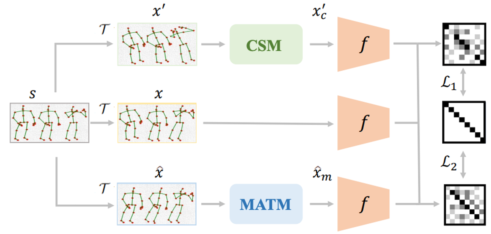
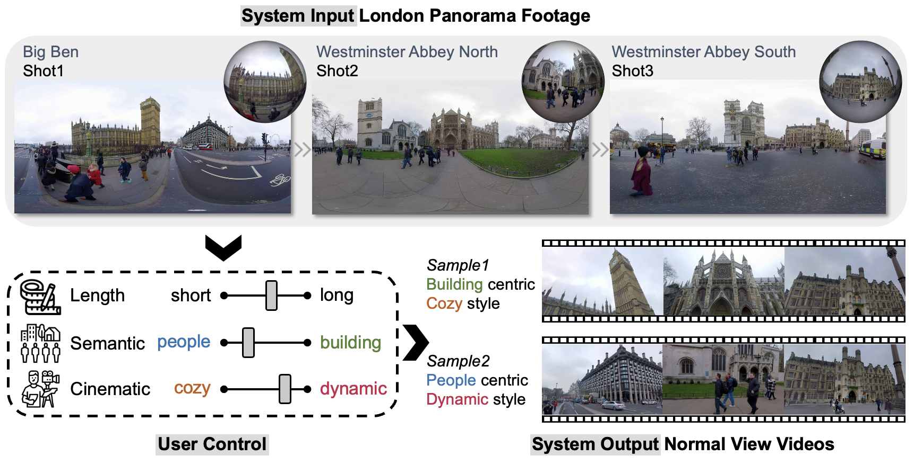
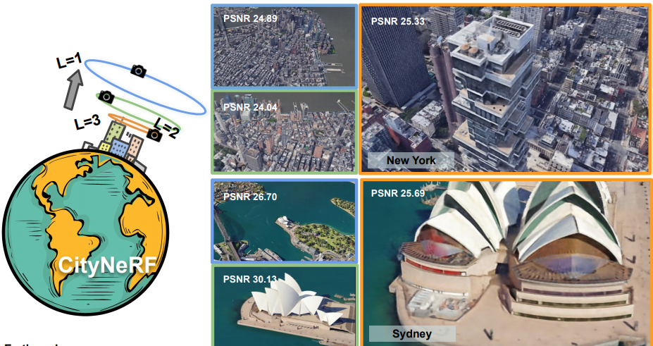
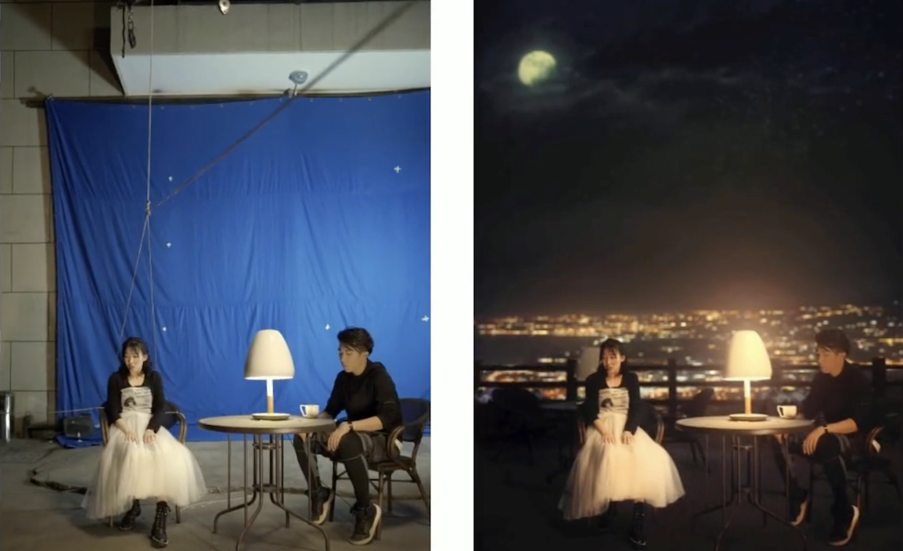
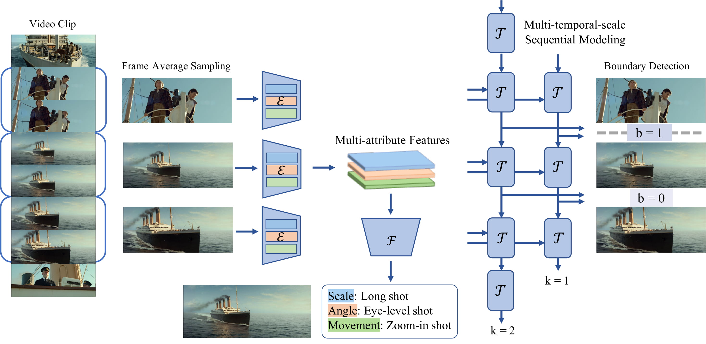
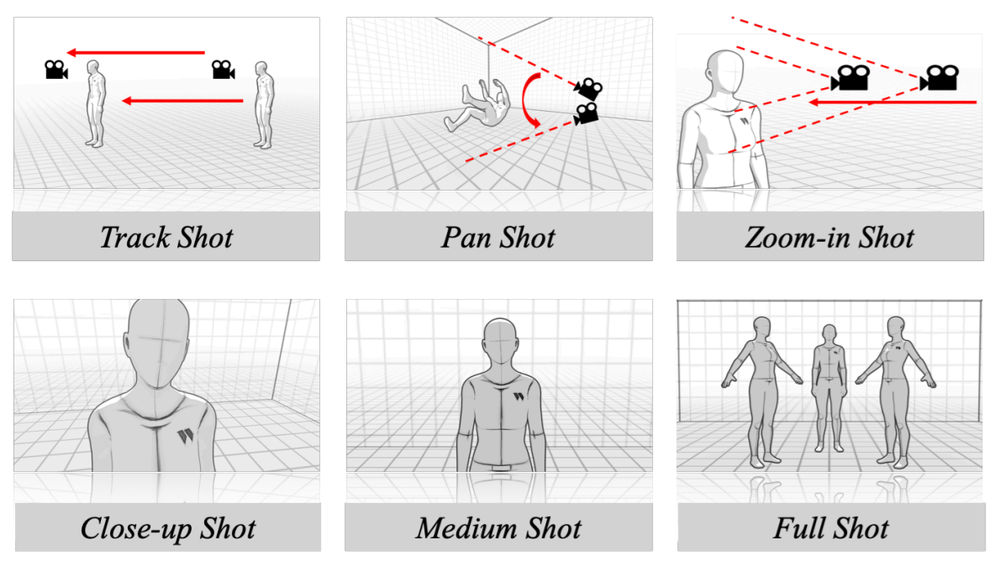
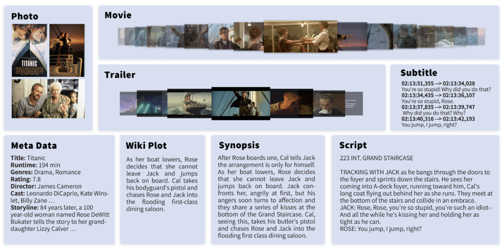
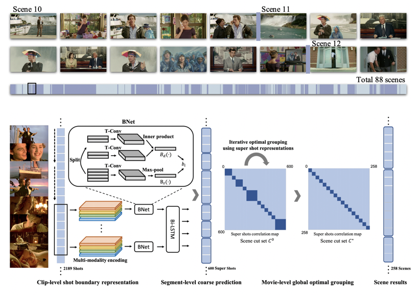
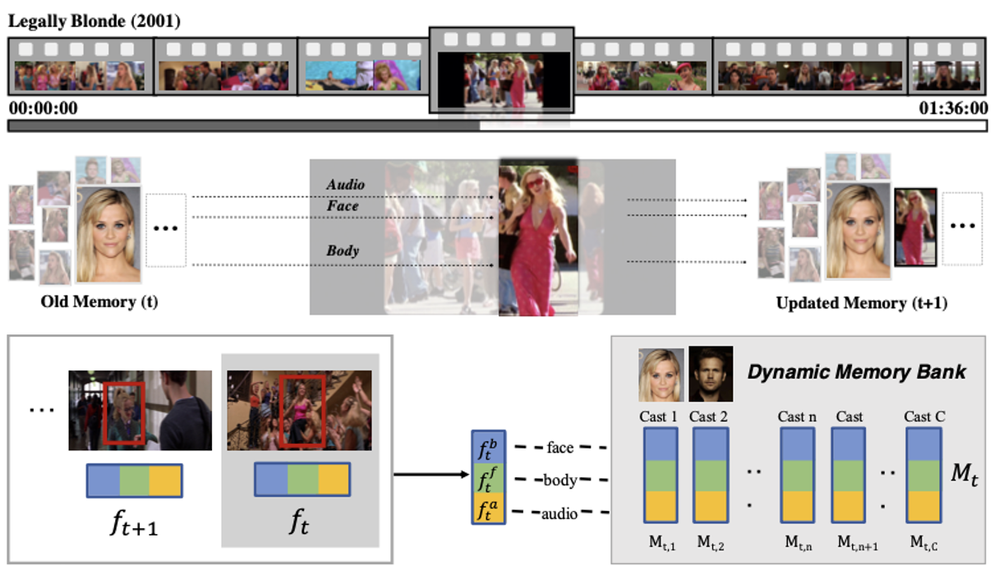
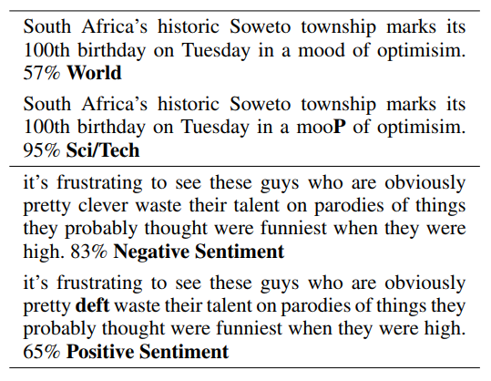

Awards and Grant
| 2023 | |
| 2022 | |
| 2021 | |
| 2021 | |
| 2021 | |
| 2015 | |
| 2017 | |
| 2018 | |
| 2017 | |
| 2013 |
{kind=link}
More
| 2015 | |
| 2016 | |
| 2015 | |
| 2016 | |
| 2017 | |
| 2016 | |
| 2017 | |
| 2016 | |
| 2016 | |
| 2014 |
Anyi Rao is a Postdoctoral Scholar at
Stanford
with
Maneesh Agrawala.
He has research experiences at Meta Reality Lab,
Vector Institute,
University of Toronto,
Hong Kong University.
He received the Ph.D. at MMLab
in the
Chinese University of Hong Kong,
advised by Dahua Lin and Bolei Zhou.
He got the B.S. from
Nanjing University
in 2018, ranking 1/183 in EE.
He studies human-centered AI for multimodality and creativity,
with focuses on intelligent video editing and creation, video semantic and cinematic analysis,
aiming to build connections between AI and humans for collaborative intelligence.
|
|
Dynamic Storyboard Generation in an Engine-based Virtual Environments for Video Production |
|
 |
Self-supervised Action Representation Learning from Partial Spatio-Temporal Skeleton Sequences |
|
 |
Shoot360: Normal View Video Creation from City Panorama Footage |
|
 |
BungeeNeRF: Progressive Neural Radiance Field for Extreme Multi-scale Scene Rendering
|
|
 |
A Coarse-to-Fine Framework for Automatic Video Unscreen |
|
|
BlockPlanner: City Block Generation with Vectorized Graph Representation |
|
 |
Jointly Learning the Attributes and Composition of Shots for Boundary Detection in Videos |
|
 |
A Unified Framework for Shot Type Classification Based on Subject Centric Lens
|
|
 |
MovieNet: A Holistic Dataset for Movie Understanding
|
|
 |
A Local-to-Global Approach to Multi-modal Movie Scene Segmentation |
|
 |
Online Multi-modal Person Search in Videos |
|
 |
HotFlip: White-Box Adversarial Examples for Text Classification |
| 2023 | |
| 2022 | |
| 2021 | |
| 2021 | |
| 2021 | |
| 2015 | |
| 2017 | |
| 2018 | |
| 2017 | |
| 2013 |
| 2015 | |
| 2016 | |
| 2015 | |
| 2016 | |
| 2017 | |
| 2016 | |
| 2017 | |
| 2016 | |
| 2016 | |
| 2014 |
|
Multi-modal Video Analysis and Understanding |
|
Robust Training with Word-level Adversity for NLP |
His GPA ranked No.1 in each semester during his undergraduate studies at Nanjing University
with an overall GPA: 3.96/4.00 and Rank: 1/183.
He finished major curricula in 2 years and learned a bunch of online courses.
[Whole]
|
Automatic Music Accompaniment Using Probabilistic Machine Learning |
|
Real-time 3D Surface Reconstruction Using Lidar (Light Detection And Ranging) |
Co-Founder of a Children Care Volunteer Program
Sep. 2015 - Dec. 2015
Co-founded a psychological consulting program to promote left-behind children's growth and education.
Volunteered to teach left-behind children Math and English in
a junior high school located in the remote, underdeveloped Xiushui county.
Recognized as a key team leader in the successful Warm One Hundred Campaign, which raised money for
left-behind children. Our group received an excellence award from the China Foundation for Poverty Alleviation.
Vice President of a Young Volunteers Association at Nanjing University
Jun. 2015 - Jun. 2016
Organized and participated in over 100 out-of-school and 20 in-school activities covering over 1000 volunteers.
Our association received a volunteer association excellence award.
Research Intern Group Leader of JCET
[Media Report]
July. 2015 - Aug. 2015
Campus Ambassador of Huawei
Aug. 2017 - Dec. 2017
Student Volunteer of International Conference on Computer Vision (ICCV)
Dec. 2019
Professional Activities
Co-organizer:
Workshop on AI for Creative Video Editing and Understanding at ECCV 2022, ICCV 2021
Program Committee Member: CVPR, ICCV, CHI, NeurIPS, ICML, ICLR, AAAI, IJCAI, ECCV
Journal Reviewer: IEEE Transactions on Multimedia, IEEE Transactions on Circuits and Systems for Video Technology
Judge:
The 3rd International Artificial Intelligence Fair
Teaching Experience
Head TA, IERG 4160, Image and Video Processing (graduate level), Fall 2019
TA, IERG 3180, Microcontrollers and Embedded Systems Laboratory, Spring 2020
Patents
A Video Generation Method, CN202210699177.X
A Video Editing Method and Related Program Products, CN202210691662.2
A Video Editing Method, CN202010694551.1
A Video Classification Method, CN202010694811.1
An Image Processing Method and Related Products, CN202010450801.3
A Zero-shot Action Recognition Method, CN202110821209.4
A Layout Generation Method, CN202111128490.X
Hobbies
Love: 🌊🥥🏄♂️✈️🎬
Travel: 🇨🇳🇭🇰🇺🇸🇯🇵🇲🇴🇬🇧🇸🇬🇰🇷🇦🇪🇳🇱🇧🇪🇩🇪🇫🇷🇹🇭
Undergrad:
University Student Choir Member
(Joyful Snowflakes written by Chih-mo Hsu),
Department Young Volunteers Association Vice President,
Bronze medal at University 55th Sports Meeting
Language: A bit of Japanese and Cantonese, Native Mandarin, Full proficiency in English